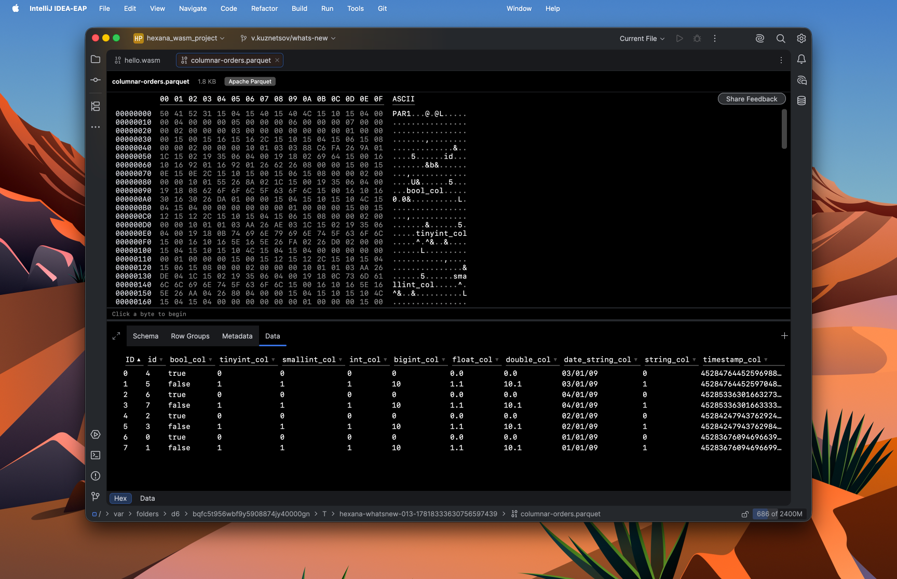
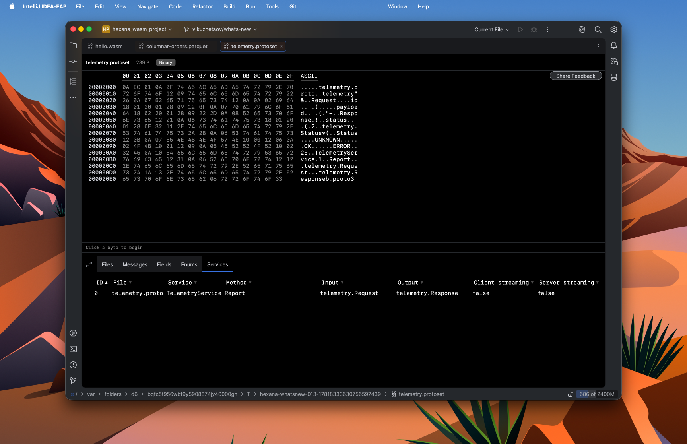
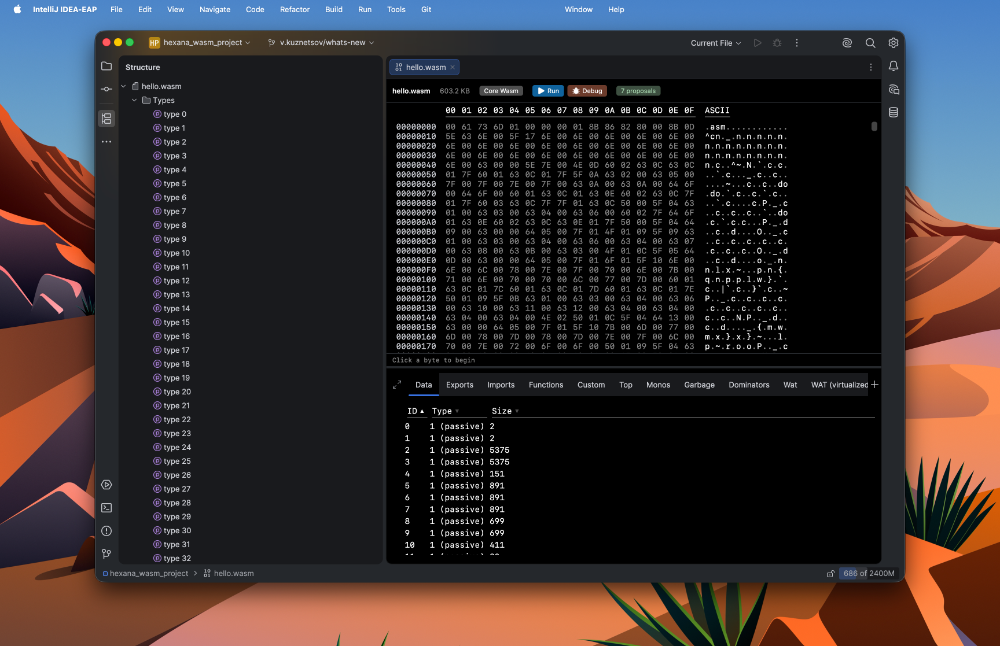
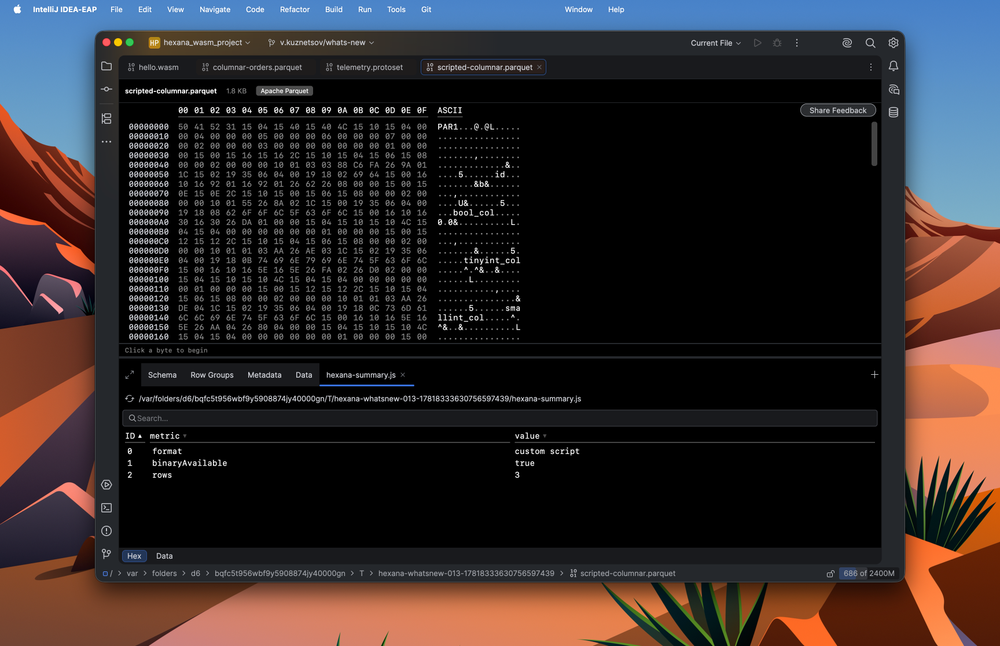

Hexana update
What's New in Hexana 0.13
Hexana 0.13 focuses on Data, Protobuf, and Navigation while refining binary inspection inside JetBrains IDEs.
Data
Inspect Parquet and Arrow data in Hexana
Columnar files now open with schema, metadata, batch structure, decoded rows, and row-to-hex byte highlighting.
- Open Apache Parquet and Apache Arrow IPC file-format binaries for inspection. Both are recognised by content magic (
PAR1for Parquet,ARROW1for Arrow IPC files) rather than by extension. - Parquet and Arrow files gain a Data tab that decodes the actual contents into a table (one column per schema leaf field, one row per record) and links the table to the hex view: selecting a row highlights that record's bytes in the hex editor as disjoint spans, at the best granularity each value allows (an exact per-value range for uncompressed PLAIN data, a page or chunk box for compressed or encoded data). The first row group (Parquet) or first record batch (Arrow) is decoded, capped at 10,000 rows, with a note when more rows or batches exist.
- Parquet INT96 values (legacy 12-byte timestamps) are decoded and shown as their signed 96-bit integer in base-10, matching the BigInteger representation other Parquet tooling exposes.

Protobuf
Browse Protobuf schemas and raw wire messages
Descriptor sets open as structured tables, and any file can be decoded as a schema-less Protobuf wire message from the Hexana context menu.
- Open compiled Protocol Buffers descriptor sets (
.desc/.protoset, produced byprotoc --descriptor_set_out) for inspection. They are recognised by content structure (a leading length-delimited field whose embeddedFileDescriptorProtoname ends in.proto) as well as by the.desc/.protoset. - Open As Protobuf Message (project-view context menu) decodes any file as a raw Protocol Buffers wire message, best-effort and without a schema. Because a bare wire message has no magic bytes, this is an explicit action rather than auto-detection.

Navigation
Navigate binaries from the IDE Structure tool window
Core WASM modules and ELF binaries now populate the IDE Structure tool window with byte-range trees, functions, symbols, and Run Export actions for runnable WASM exports.
- Core WASM modules and ELF binaries now integrate with the IDE Structure tool window, and runnable WASM function exports expose a Run Export action from the structure tree context menu. The tree exposes sections and records as navigable byte ranges, so choosing an entry scrolls and selects the corresponding bytes in the Hexana editor.

Automation
Add custom scriptable analysis tabs
Attach JavaScript tabs to an opened binary, print custom output, and render CSV or TSV results as searchable tables.
- Support for showing custom scriptable info tabs – write a JS script that uses 'print' to show information and 'binary' to access binary data; use "+" to add a script tab – a dialog with instructions and an API reference will be shown; csv and tsv are shown as tables.

Also in 0.13
- Run with Wazero and search tables consistently WASM run configurations add Wazero for module execution, while Hexana tables share one faster searchable control.